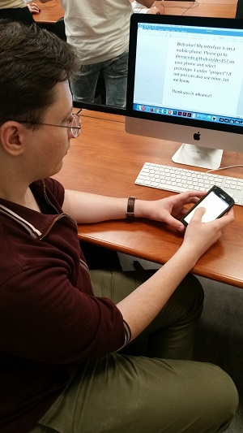

Julia was my first audience subject and she gave a lot of good feedback. She liked the overall visual and graphics and reported there was decent contrast with the background and text. She enjoyed the reading comprehension and suggested linking stories together for a fun element. She liked how the overall concept felt fast like a conversation in real life. Some issues she pointed out were that links were not very cohesive/ hard to find and I noticed the game didn't fit her phone screen as well. She suggested perhaps a listening comprehension game for example hearing a few sentences describing a scene and the player would select the appropriate picture. I think this is where the graphics style could be applied more too.
Derek was my second audience test subject and he provided other interesting points. He liked the graphics theme as well but felt they conflicted with the sharp squares and the sleek font. He opened the game on a different browser from chrome on his phone and he found that buttons didn't work properly. I also noticed that sometimes the buttons became mishapen, so I know to definitely investigate that. His behavior with clicking words that didn't link anywhere gave me an idea of letting the user select words in the app to save in a vocab archive. The scrolling feature was definitely problematic, so I think that I will organize the pages into overlays next time.